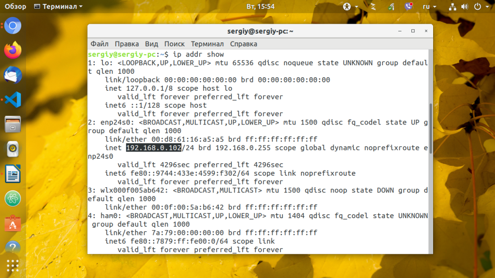
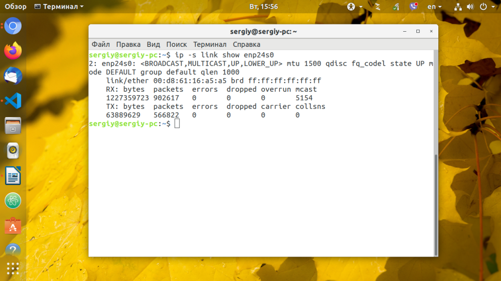
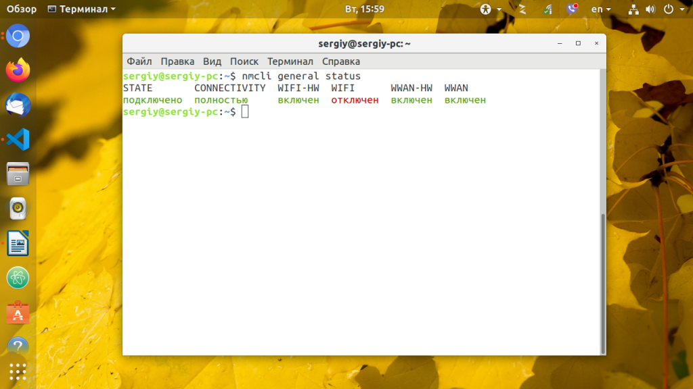
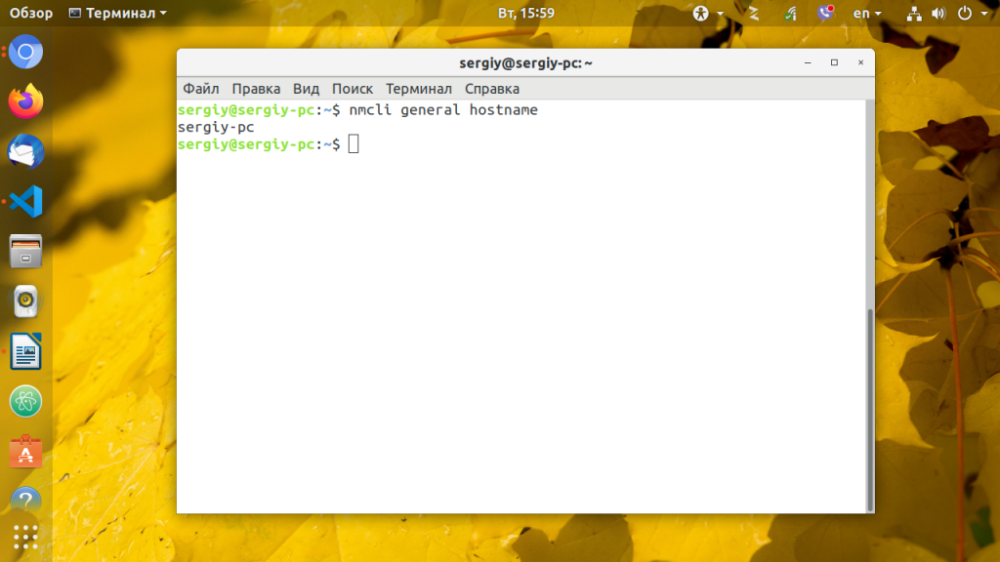
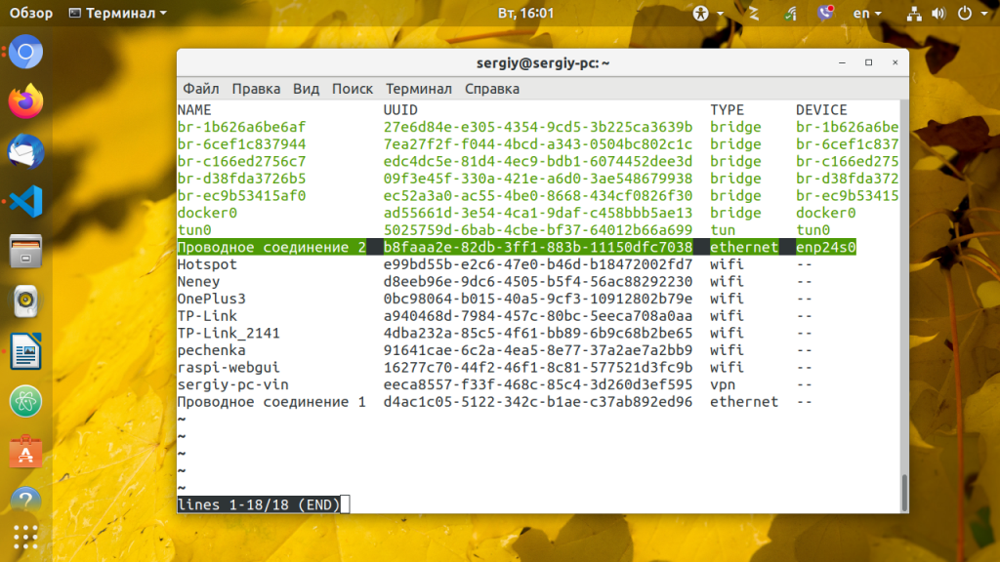
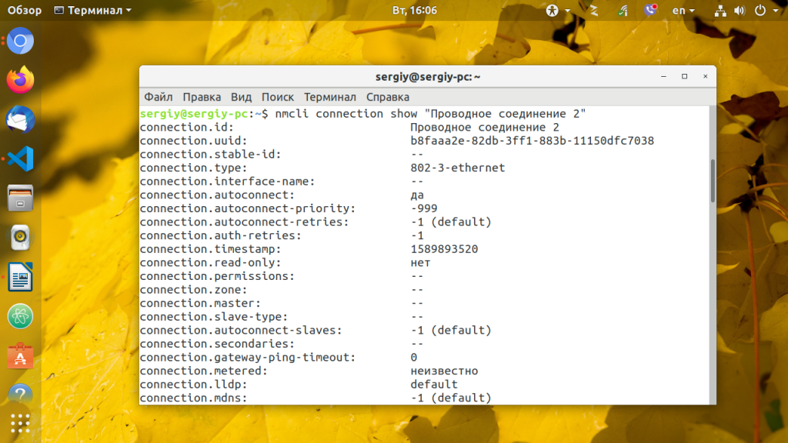
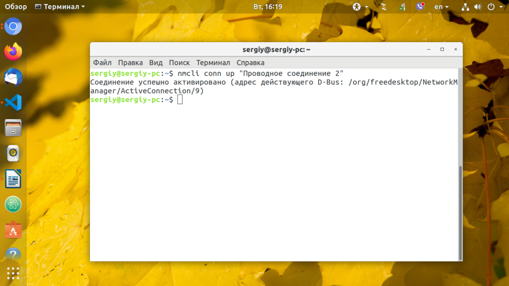
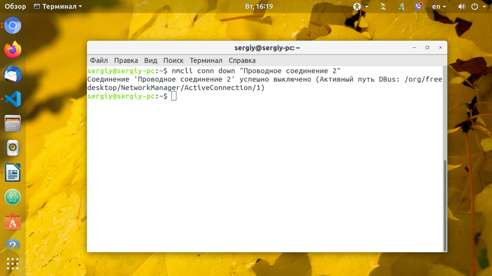
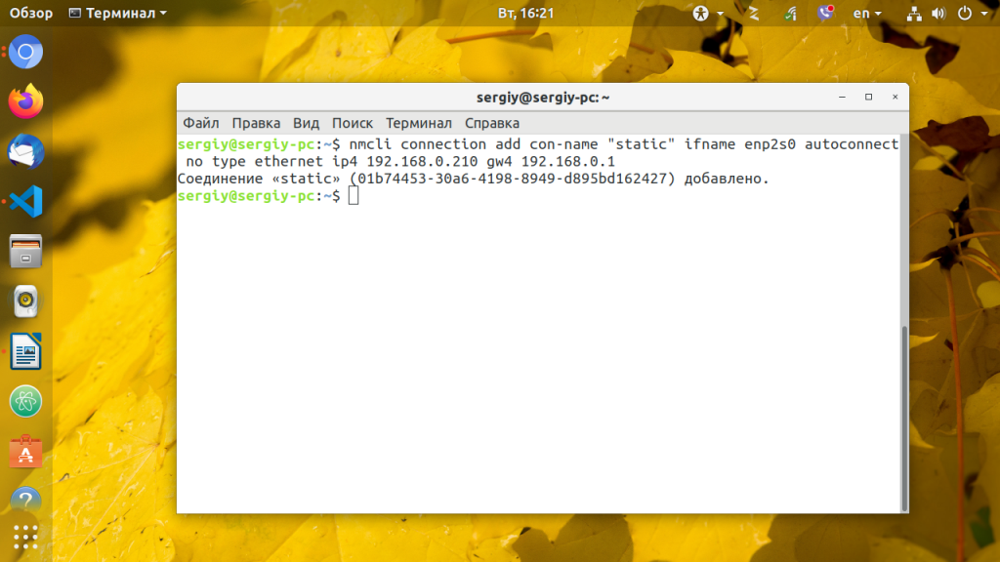
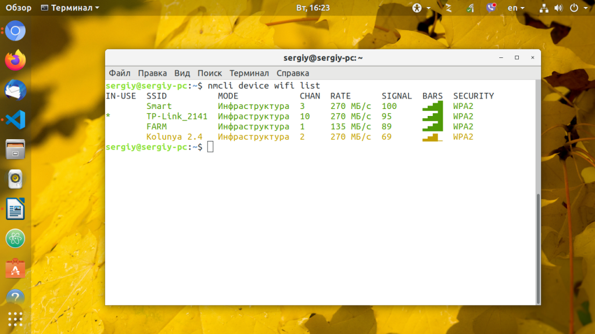

Настройка Network Manager в консоли
Команды Обновлено: 19 мая, 2020 10 admin
NetworkManager - популярный инструмент управления сетевыми подключениями в Linux, имеет удобный графический интерфейс как для Gnome, так и для KDE, но бывают ситуации когда окружение рабочего стола не запускается, и нужно поднимать сеть из консоли, или нужно настроить сеть на сервере где не установлено рабочее окружение.
В этой инструкции будет рассмотрена настройка Network Manager в консоли с помощью утилиты nmcli. С настройкой в графическом интерфейсе вы разберетесь без каких-либо инструкций, поэтому была выбрана именно эта тема. Также поговорим о том, как посмотреть информацию о сетевых интерфейсах в системе.
Чтобы получить информацию обо всех установленных в системе сетевых интерфейсах используйте команду:
ip addr show
Примерный вывод:

Для просмотра статистики переданных и полученных пакетов для интерфейса, например, enp24s0, наберите:
ip -s link show enp24s0

А чтобы посмотреть таблицу маршрутизации:
ip route show match 0/0
Утилита nmcli - многофункциональный и гибкий инструмент командной строки для настройки сети с помощью Network Mananger из консоли. Сначала рассмотрим ее синтаксис:
$ nncli опции объект команда
Чаще всего в nmcli мы будем использовать такие объекты:
Команды для каждого объекта разные, а опции нам не будут интересны. Дальше рассмотрим примеры nmcli network manager.
Настройка сети с помощью nmcli
Первым делом нужно запустить NetworkManager из консоли:
sudo systemctl start NetworkManager
Теперь смотрим состояние интерфейсов с помощью nmcli:
nmcli general status

Еще мы можем посмотреть имя хоста:
nmcli general hostname

Получаем состояние интерфейсов
nmcli device status
Теперь самое интересное, управление сетью nmcli. Смотрим список доступных подключений:
nmcli connection show

Здесь вы можете видеть одно проводное подключение для интерфейса enp24s0. С помощью следующей команды можно посмотреть информацию о нём:
nmcli connection show "Проводное соединение 2"

Чтобы подключится к сети с помощью нужного подключения используйте команду up:
nmcli connection up "Проводное соединение 2"
Команды можно сокращать, например:
nmcli conn up "Проводное соединение 2"

А для деактивации подключения используйте команду down:
nmcli conn down "Проводное соединение 2"

Чтобы создать новое подключение используйте команду add. Например создадим новое подключение с именем dhcp:
nmcli connection add con-name "dhcp" type ethernet ifname enp24s0
Команде надо передать параметр type - тип устройства, в нашем случае ethernet (Проводное соединение), а также ifname - название сетевого интерфейса, в этом примере enp24s0. По умолчанию используется тип подключения DHCP, поэтому больше ничего настраивать не надо и вы можете уже активировать это подключение как описано выше.
5. Создание соединения с статическим адресом
Для статического подключения настроек больше, вам надо передать команде add ip адрес, который будет использоваться в качестве основного в параметре ip4, а также шлюз с помощью параметра gw4:
nmcli connection add con-name "static" ifname enp2s0 autoconnect no type ethernet ip4 192.168.0.210 gw4 192.168.0.1

Продолжим настройку нашего статического соединения. Обычно оно уже может работать, но вы можете захотеть добавить DNS сервер. Для этого используется команда modify:
nmcli conn modify "static" ipv4.dns 8.8.8.8
И ещё один DNS сервер с помощью оператора +:
nmcli conn modify "static" +ipv4.dns 8.8.4.4
Для добавления дополнительной информации в поле используйте символ +. Например, вот так можно добавить еще один ip адрес:
nmcli conn modify "static" +ipv4.addresses 192.168.0.240/24
Обратите внимание, что IP адрес должен быть из той же подсети, что и ваш шлюз иначе может ничего не работать. Теперь можете активировать подключение:
nmcli connection up static
В графическом интерфейсе это делается одной галочкой, здесь одной командой. Смотрим состояние wifi:
nmcli radio wifi

Теперь включаем:
nmcli radio wifi on
Или отключаем:
nmcli radio wifi off
Такой командой можно посмотреть список доступных сетей wifi:
nmcli device wifi list
Команда для подключения к новой сети wifi выглядит не намного сложнее. Например, давайте подключимся к сети TP-Link с паролем 12345678:
nmcli device wifi connect "TP-Link" password 12345678 name "TP-Link Wifi"
Если всё прошло хорошо, то вы получите уже привычное сообщение про создание подключения с именем TP-Link Wifi и это имя в дальнейшем можно использовать для редактирования этого подключения и управления им, как описано выше.
Как видите, все очень просто и быстро. Настройка network manager в консоли выполняется в пару команд, достаточно только их запомнить или где-нибудь написать, чтобы вы могли выполнить управление сетью nmcli когда это понадобится.